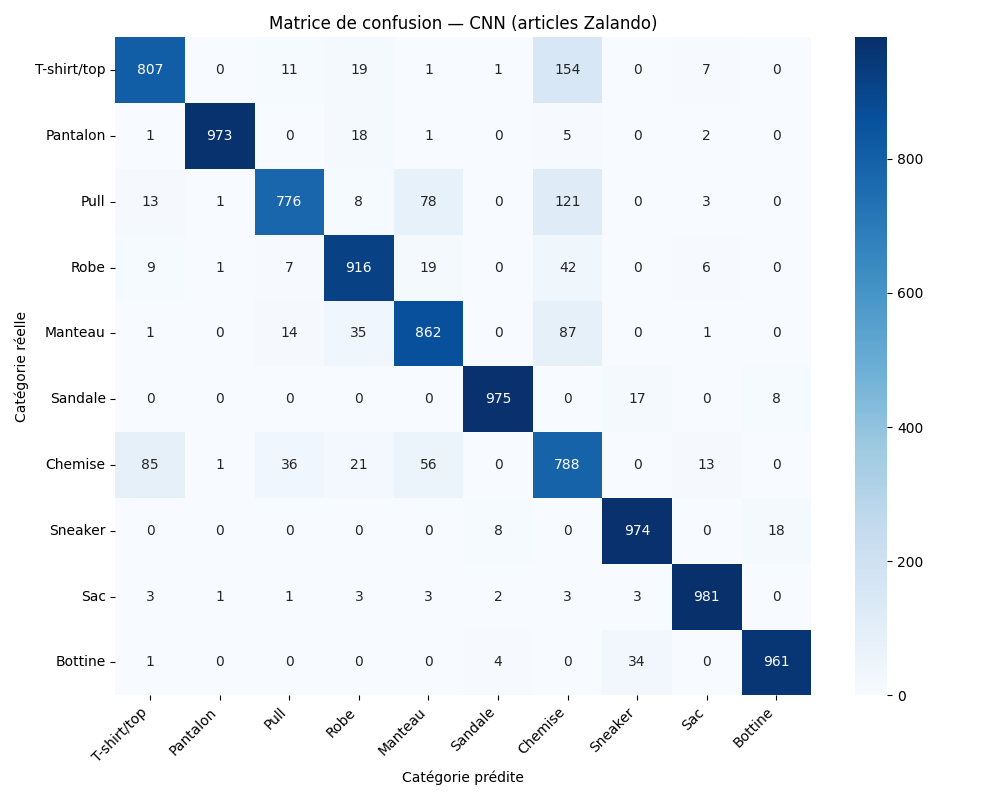
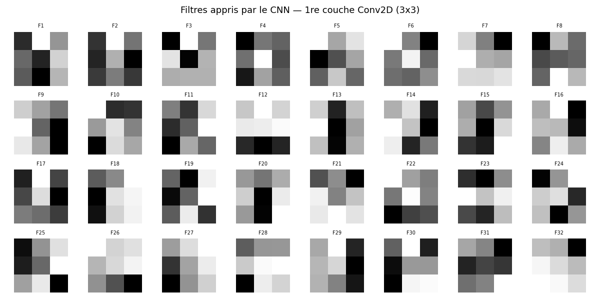
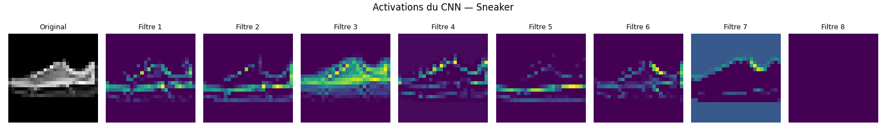

Livrable TP3 — Deep Learning
Classification automatique de produits e-commerce (Zalando)
Réalisé par Mehdi / B3
🛍️ 1. Exploration et Prétraitement
| Dimension | Valeur / Réponse |
|---|---|
| Dataset | Fashion-MNIST (70 000 images, 28x28, niveaux de gris) |
| Catégories | 10 (T-shirt/top, Pantalon, Pull, Robe, Manteau, Sandale, Chemise, Sneaker, Sac, Bottine) |
| Distribution | Dataset parfaitement équilibré (6 000 images par classe dans le train). |

Exemples du catalogue Zalando (1 par catégorie)
❓ Le catalogue est-il équilibré ? Quel impact sur l'entraînement ?
Oui, il est parfaitement équilibré. L'impact est très positif : le modèle ne sera pas biaisé vers une classe majoritaire. On peut utiliser l'Accuracy comme métrique fiable.
📊 2. Évaluation et Courbes d'apprentissage

Diagnostic d'overfitting : MLP vs CNN
| Modèle | Accuracy | Taux d'erreur |
|---|---|---|
| Random Forest (Baseline) | ~ 87.5 % | ~ 12.5 % |
| Réseau Dense (MLP) | ~ 88.5 % | ~ 11.5 % |
| CNN | ~ 91.0 % | ~ 9.0 % |
❓ L'écart train/validation sur les courbes d'apprentissage indique-t-il de l'overfitting ?
Sur le réseau Dense, on observe un décrochage après ~8 époques. Sur le CNN, grâce au Dropout, l'écart est beaucoup plus réduit, montrant une meilleure généralisation.
🎯 3. Analyse détaillée (CNN)

Matrice de confusion — CNN

Exemples d'articles mal classifiés
❓ Quelles catégories sont le plus souvent confondues ?
Les confusions majeures sont Chemise vs T-shirt et Pull vs Manteau. C'est logique : à 28x28 pixels, ces articles ont des silhouettes très similaires.
👁️ 4. Visualisation (Interprétabilité)

Filtres appris (1re couche)

Feature maps (Activations sur un Sneaker)
❓ Que « voit » le CNN ?
Le CNN détecte des contours et des textures. Les feature maps montrent que certains filtres s'activent sur la silhouette de la chaussure, tandis que d'autres isolent les lacets ou la semelle.